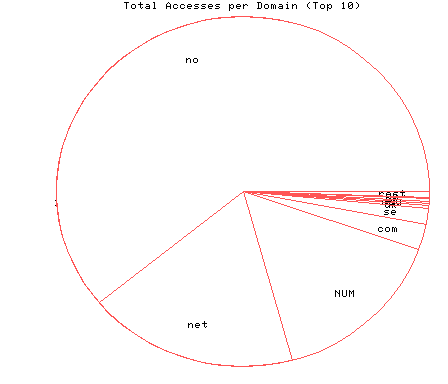
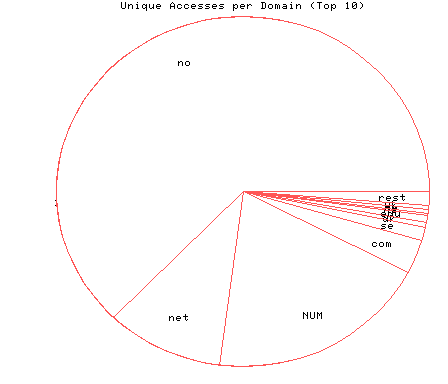

HTTP Server Domain Statistics
Covers: 09/19/95 to 03/11/96 (175 days).
All dates are in local time.
1 level, sorted by number of requests, 17 unique domains.
24944 : 1312 : 03/11/96 : Norway (.no) 7484 : 213 : 03/04/96 : Network (.net) 6279 : 405 : 03/10/96 : (numerical domains) 978 : 65 : 03/09/96 : US Commercial (.com) 585 : 27 : 03/06/96 : Sweden (.se) 116 : 8 : 03/08/96 : Denmark (.dk) 88 : 14 : 03/01/96 : US Educational (.edu) 85 : 5 : 02/20/96 : Netherlands (.nl) 80 : 6 : 02/12/96 : Germany (.de) 70 : 8 : 03/04/96 : United Kingdom (.uk) 45 : 6 : 03/01/96 : Finland (.fi) 40 : 5 : 02/15/96 : Non-Profit (.org) 30 : 3 : 11/29/95 : Australia (.au) 13 : 4 : 03/07/96 : Canada (.ca) 12 : 1 : 02/14/96 : Spain (.es) 12 : 1 : 12/08/95 : Switzerland (.ch) 8 : 1 : 11/01/95 : Iceland (.is)

Statistics generated at Mon Mar 11 03:08:12 MET 1996, (C) Schibsted Nett AS, 1995.